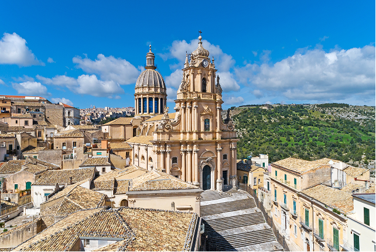
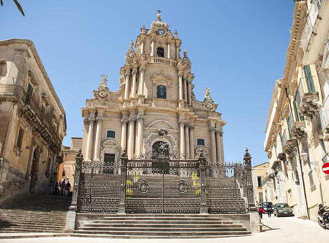
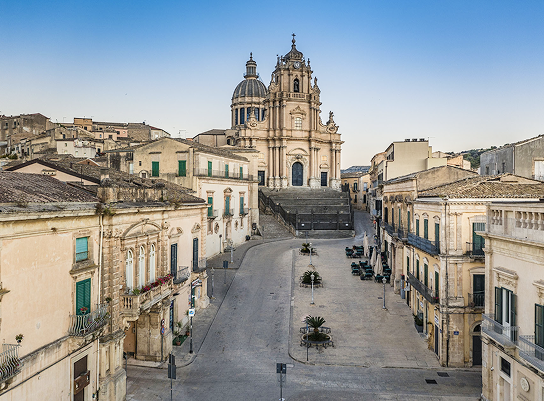
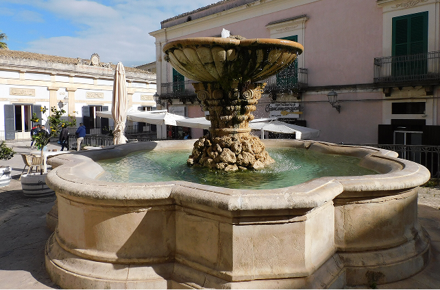

Il Barocco Siciliano
Piazza Duomo è il fulcro del quartiere storico di Ragusa, in particolare della suggestiva Ragusa Ibla. È dominata dalla maestosa Cattedrale di San Giorgio, capolavoro del barocco siciliano. La piazza offre una vista affascinante ed è uno dei luoghi più visitati della città. La piazza è caratterizzata da un’ampia scalinata che conduce all’ingresso della cattedrale, creando un effetto scenografico di grande impatto. Gli edifici che la circondano, con balconi decorati e facciate eleganti, contribuiscono a rendere l’atmosfera armoniosa e ricca di fascino.
Durante il giorno, Piazza Duomo è animata da turisti e cittadini che passeggiano o si fermano nei locali vicini come i caffè e i ristoranti affacciati sulla piazza, che permettono di godere del panorama.Al centro della piazza si trova una splendida fontana barocca, circondata da un elegante spazio pavimentato. L’acqua zampillante e i dettagli decorativi della fontana creano un punto focale scenografico, offrendo sia ai visitatori che ai fotografi scorci unici per catturare l’essenza della città. La fontana, con le sue statue e getti d’acqua armoniosi, è un simbolo della vitalità e della bellezza artistica di Ragusa Ibla.


tra tradizione, cultura e bellezza
Le luci calde riflettono sulle facciate barocche, creando contrasti suggestivi e rendendo la piazza un luogo perfetto per passeggiate romantiche o semplicemente per ammirare la magnificenza del barocco siciliano. Oltre alla funzione estetica, la piazza è anche un luogo di socializzazione per la comunità. Eventi culturali, concerti all’aperto e mercati stagionali animano regolarmente la piazza, rendendola un punto di incontro vivo e pulsante per cittadini e turisti.
Le sedute attorno alla fontana offrono l’opportunità di osservare la vita quotidiana e di immergersi nell’atmosfera autentica di Ragusa Ibla. Ogni angolo di Piazza Duomo racconta la storia della città: dalle facciate decorate degli edifici storici, alle vie adiacenti che conducono a vicoli pittoreschi, fino ai dettagli minimi della pavimentazione e degli ornamenti della fontana. Passeggiando per la piazza, è possibile percepire il connubio perfetto tra arte, storia e vita contemporanea, rendendo ogni visita un’esperienza memorabile e completa.
